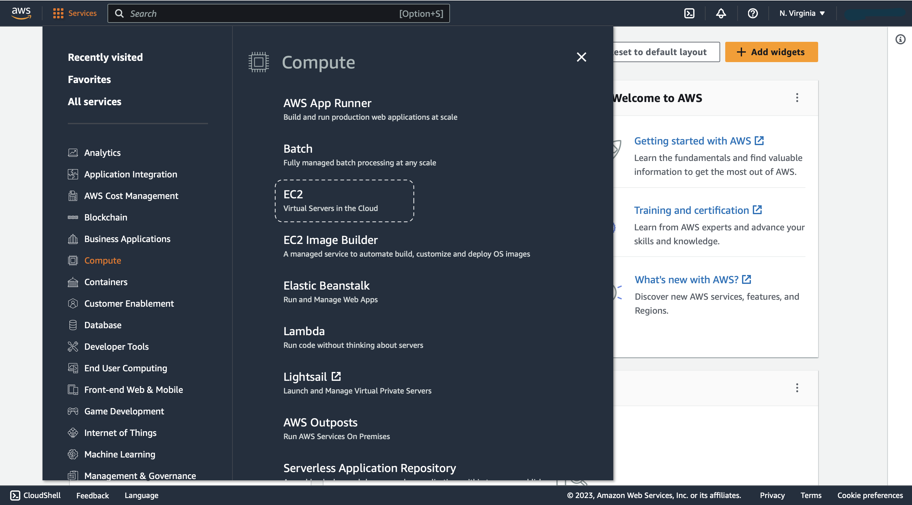

Welcome to our blog post where we’ll guide you through setting up your AWS instance and installing all the necessary requirements for your work. We understand the importance of a smooth and efficient setup process, so we’ll provide step-by-step instructions to ensure you have everything you need to get started.
Let’s dive in and get your environment up and running seamlessly!
Setup AWS Instance
- Go to
https://aws.amazon.comto Sign in / Create an AWS Account. - To launch EC2 instance, click on to
serviceson the left-top corner of the page. SelectComputeandEC2.

- To launch a new instance, click on
Launch Instance.

- Set any
Nameto the instance and selectUbuntuin theApplication and OS Imagessection. Also, chooseUbuntu Server 20.04 LTS (HVM), SSD Volume Typeas the Amazon Machine Image (AMI).
- Select
t2.xlargeas the Instance type for our instance. As 16GiB of memory should be ideal for our work.
- If you don’t already have a
Key pair, you can create a new key pair. You would be asked to download and save your key pair.
Save your key pair at ~/.ssh/ folder.

- Lastly, increase the storage to
30 GiBas we would be working with large file and docker images with would consume some space.
- Click on
Launch Instanceto create and start the new instance.
Connect to Instance via SSH
Once your instance is running, you can go to the instance summary page to checkout your Public IPv4 address which will be used to connect to the instance via ssh.
To check whether you can establish a connection to your instance:
Eg. ssh -i ~/.ssh/mlops-zc-key ubuntu@34.236.146.20
If asked about “Are you sure you want to continue connecting (yes/no/[fingerprint])?”, type yes.
Rather than manually entering the whole command, you can save the configurations at ~/.ssh/config file. If you don’t already have an file name config in the ~/.ssh/ directory then go to your .ssh directory and use the command touch config to create the file.
To edit the file use the command vim ~/.ssh/config.
In the file add the following details:
Host mlops-zoomcamp
HostName <your-public-ipv4-address>
User ubuntu
IdentityFile ~/.ssh/mlops-zc-key.pemEvery time you stop and start your instance you would have to edit the config file and change the public ipv4 address with the new ipv4 address.
Install Softwares
Python
- Create a directory called
downloadsand move into the directory.
- Download and Install Anaconda
wget https://repo.anaconda.com/archive/Anaconda3-2023.03-1-Linux-x86_64.sh
bash Anaconda3-2023.03-1-Linux-x86_64.sh- For the following prompts:
Press Enter
Type yes
Python installed üéâ
Docker
- Update packages using the command
- Install Docker
- Check docker is installed by running hello-world program in docker:
We don’t want to use sudo everytime we run docker. To do that, create the docker group and add your user:
- Create the docker group.
- Add your user to the docker group.
- Log out and log back in so that your group membership is re-evaluated.
If you’re running Linux in a virtual machine, it may be necessary to restart the virtual machine for changes to take effect.
- To check if you can run docker without using sudo, use the command
Docker installed üéâ
docker-compose
- Move to the home directory. It will look like
- Create a folder named
softand move into the folder.
- Download docker-compose and make the file executable
wget https://github.com/docker/compose/releases/download/v2.18.1/docker-compose-linux-x86_64 -O docker-compose
chmod +x docker-composeTo access docker-compose from any location we need to add the PATH to the bashrc file. Again move to the home directory.
- Open the
.bashrcfile using the command
- Move to the end of the file and press
ito go intoInsertMode. - Add the following peice of code in the file.
- Save and Exit the file:
- Press
esckey - Type
:wqand hitenter
- Press
- Run the command to execute the file:
- Cross-check by typing
which docker-compose. You’ll get the output as/home/ubuntu/soft/docker-compose
docker-compose installed üéâ
Please remember to stop the EC2 instance after completing your work to avoid incurring any additional charges.
Thank you for reading and I hope you found this notebook helpful. Upvote if you liked it, comment if you loved it. Hope to see you guys in the next one. Peace!